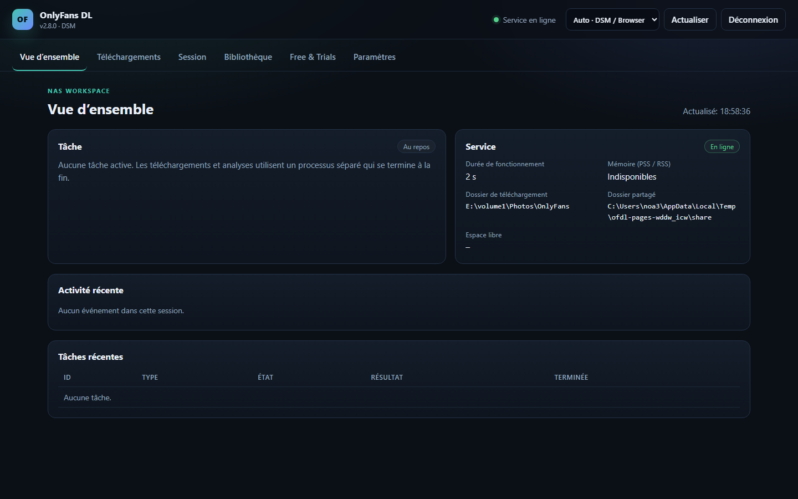

Votre bibliothèque, directement sur le NAS.
Un paquet DSM 7.2 natif pour le téléchargeur OnlyFans. Il installe un environnement Python 3.13 privé et lance une petite interface web sur le NAS. Téléchargements, analyses d’abonnements et aperçus s’exécutent dans un processus de travail séparé et de courte durée.
Fonctionnalités
Paquet natif
Installation via Package Center. Aucune commande Python, pip ou SSH n’est nécessaire pour l’usage normal.
Petit service de contrôle
Le service permanent n’utilise que la bibliothèque standard. Les bibliothèques lourdes ne sont chargées que par le processus temporaire.
Interface web
Import et test de session, sélection de dossier, choix des créateurs, téléchargements, pause/annulation, planification et état.
Bibliothèque existante
Réutilise les fichiers, l’arborescence, les fichiers .part et le manifeste .ofdl.sqlite3 existant.

Installation
- Ajouter la source SynoCommunity.
Package Center → Paramètres → Sources de paquets →https://packages.synocommunity.com/ - Installer le SPK.
Package Center → Installation manuelle. Python 3.13 est installé comme dépendance. - Définir le mot de passe web.
L’assistant demande un mot de passe. Ouvrez ensuite le paquet depuis le menu DSM ouhttp://<IP-NAS>:8765/. - Choisir un dossier et importer une session.
Dans DSM, accordez àsc-onlyfansdll’accès Lecture/Écriture uniquement au dossier partagé choisi (Permissions → Utilisateur interne système). Enregistrez un chemin de bibliothèque existant dans les paramètres. Aucun dossier partagé n’est créé automatiquement.
Modèle de sécurité
Le paquet s’exécute avec le compte de service DSM non privilégié sc-onlyfansdl.
Il ne demande ni root ni appartenance au groupe administrateurs. L’interface web possède son propre mot de passe ;
ce n’est pas le SSO DSM. La session est stockée en mode 0600 et n’est jamais écrite dans les paramètres ou journaux.
Pour l’accès distant, placez le reverse proxy HTTPS de DSM devant le port 8765. N’exposez pas ce port directement sur Internet.
Stockage et compatibilité
Bibliothèque
Un seul chemin enregistré explicitement dans les paramètres pour les téléchargements, la bibliothèque et la planification. Les fichiers restent en place. Une mise à jour demande de confirmer le chemin ; les anciens dossiers partagés ne sont pas supprimés.
Mémoire
Le service de contrôle reste petit. Le processus de travail se termine après chaque tâche. L’objectif de 50 MiB PSS au repos n’a pas encore été vérifié sur le DS723+.
Planification
Une heure quotidienne peut lancer les paramètres de téléchargement enregistrés. Une seule tâche s’exécute à la fois.
Langue et connexion
Sept langues d’interface, dont les textes principaux en italien, néerlandais et portugais. Le mode Auto utilise la langue DSM disponible puis le navigateur ; le choix manuel est prioritaire. Les textes manquants reviennent à l’anglais/allemand. La session survit au rechargement et à la mise à jour.
État et reprise
Le rechargement restaure la tâche en cours et les derniers événements. Analyse et transfert de fichier ont des indicateurs séparés. Les erreurs API temporaires affichent une attente de trois minutes, annulable.
Free & Trials
Recherche en lecture seule et réabonnements quotidiens optionnels uniquement pour des profils explicitement autorisés et revérifiés comme gratuitement permanents. Les essais restent à valider sur le site en raison d’un renouvellement payant possible. Un changement de prix entre la vérification et la réponse ne peut pas être totalement exclu.
Documentation
README
Vue d’ensemble, installation et notes de version (EN).
Installation
Configuration DSM pas à pas, consentement de stockage et dépannage (EN).
Architecture
Service de contrôle, processus de travail, tâches SQLite et permissions (EN).
Rapport de test
Résultats locaux et liste de vérification matérielle DSM (EN).
Sécurité
Gestion de session, exposition et réinitialisation (EN).
Fiabilité
Reconnexion, arrêt complet et limites du réabonnement gratuit (EN).